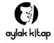

Karin Tidbeck
1977’de Stockholm’de dünyaya gelen Karin Tidbeck, Malmö’de yaşıyor. 2010 Clarion San Diego yazar atölyesinden mezun olan Tidbeck, Stockholm Üniversitesi’nde karşılaştırmalı din ve sosyal antropoloji, Skurups Folkhögskola’da yaratıcı yazarlık ve yaratıcı yazarlık eğitmeni öğrenimi gördü. Okullardaki ve tiyatrolardaki rol-yapma prodüksiyonları için serbest yazar olarak çalıştı, oyun ve etkileşimli sanat teorisi üstüne makaleler ve denemeler yazdı.
Tidbeck, 2002’den bu yana İsveççe, 2010’dan bu yana ise İngilizce kısa öyküler ve şiirler yayınlıyor. 2010’da ilk kitabı olan kısa öykü derlemesi Vem är Arvid Pekon? İsveç Yazarlar Fonu’ndan bir yıllık çalışma bursu ile ödüllendirildi. İngilizce yayın geçmişinde Weird Tales, Shimmer Magazine, Unstuck Annual ve Odd? antolojisi bulunmaktadır. İlk romanı Amatka kısa süre önce İsveç’in en büyük yayıncısı tarafından yayınlandı.